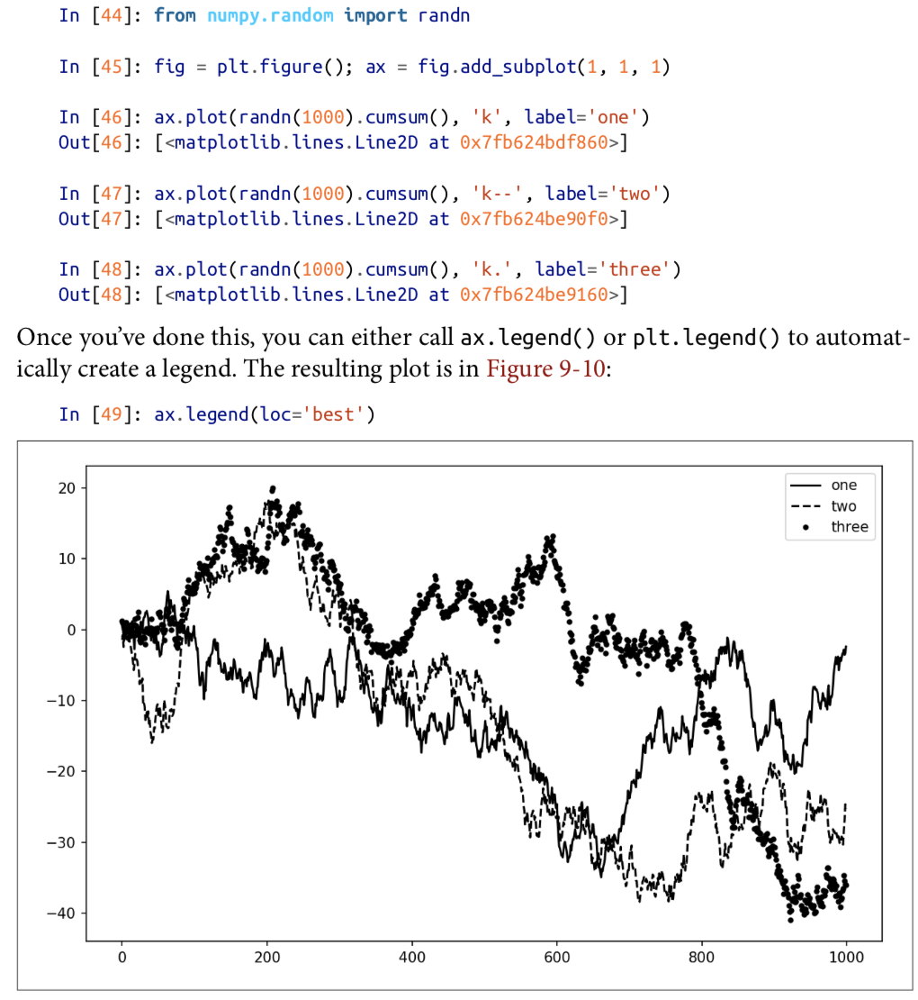
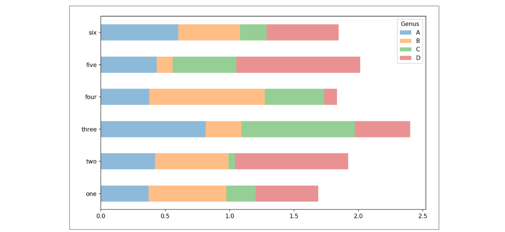
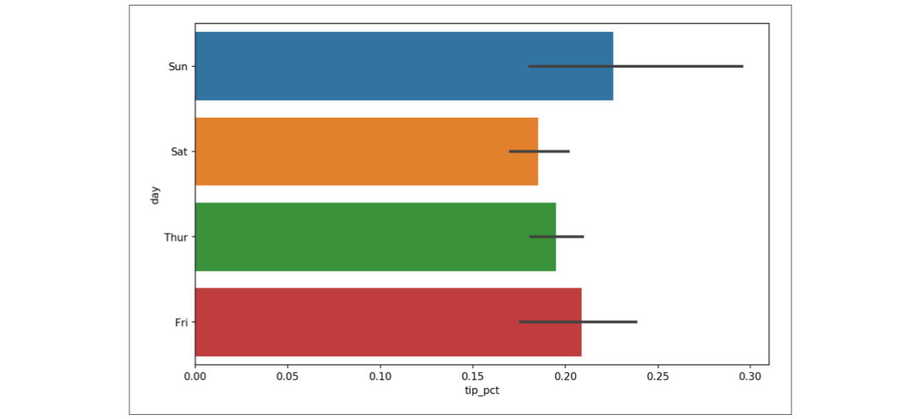
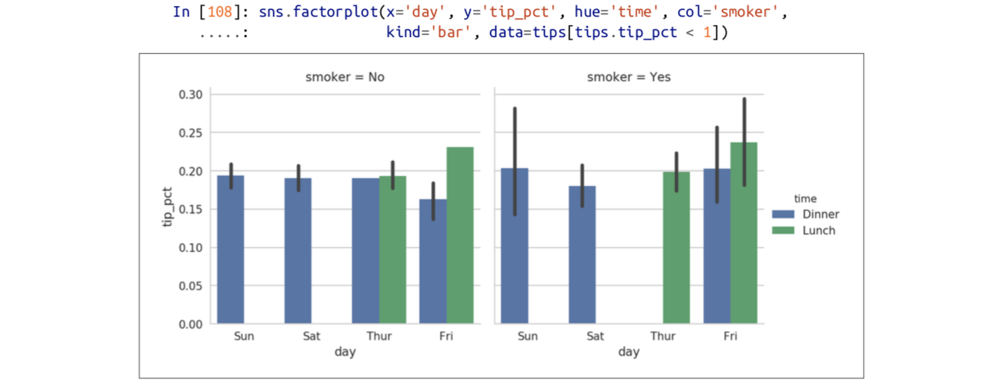

六、绘图与可视化
1.matplotlib入门
（1）图片与子图
1 | plt.plot(np.arange(10)) |
plt绘制的图位于Figure对象中
1 | fig = plt.figure() |
fig.add_subplot返回的是Axes Subplot对象
图形类型：
hist，scatter
子图：
1 | fig,axes = plt.subplots(2,3) |
调整子图间距
plt.subplot_adjust(left=None,bottom=None,right=None,top=None,wspace=None,hspace=None)
wspace和hspace分别控制的是图片的宽度和高度百分比，用作子图间距。
颜色，标记和线型
1）字符串参数指定：
plt.plot(x,y,'g--')绿色，虚线
plt.plot(x,y,'go--')绿色，虚线,标记为点
2）参数指定
plt.plot(x,y,color='g',linestyle='--')
plt.plot(x,y,color='g',linestyle='dashed'，marker='o')
3）折线图的线性插值
plt.plot(x,y,'k--',drawstyle='step-post') drawstyle默认为线性插值
（2）刻度、标签和图例
xlim,xticks,xticklabels
使用方法：
1）不带参数
plt.xlim() 返回当前的x轴绘图范围
2)带参数
plt.xlim([0,10]) 设置范围
这些方法对应子图中的get_xlim()和set_xlim()方法
2.1设置标题、轴标签、刻度和刻度标签
1 | ax.set_title('Title') |
2.2 图例
要使用图例，在绘制时要穿入 label参数，
不使用图例，绘制时不要穿入label或传入label='_nolegend_'

(3)注释与子图加工
文本，箭头：text，arrow，annotate方法
文本：
ax.text(x,y,'hello world',family='monospace',fontsize=10)
添加箭头：
1 | ax.annotate(label, |
其他图形：
matplotlib.pyplot中提供了常见图形的引用，完整的引用在matplotlib.patches中
使用时，先生成patch对象shp，然后调用ax.add_patch将图形添加到子图中
1 | rect = plt.Rectangle((0.2,0.75),0.4,0.15,color='k',alpha=0.3) |
(4)将图像保存到文件
1 | plt.savefig(filename) |
（5）修改配置
1 | plt.rc() |
2.使用pandas和seaborn绘图
（1）折线图
默认情况下pandas对象调用plot函数会绘制折线图
1 | s.plot() |
（2）柱状图
bar(),barh() :垂直/水平柱状图
使用：
data.plot.bar(ax=axes[0],color='k',alpha=0.7)
堆积柱状图：
data.plot.bar(stacked=True)

使用seaborn绘制：
1 | import seaborn as sns |

（4）直方图和密度图
直方图：data.plot.hist(bins=50)分成50列
内核密度估计图：data.plot.density()
同时绘制两者：sns.distplot(data,bins=100,color='k')
(5)散点图和点图
1 | 散点图 |
（6）特征网格和分类数据

sns.factorplot(x='day',y='tip',row='time',col='smoker',data=tips,kind='bar')
通用的特征网格 sns.FacetGrid